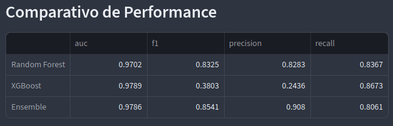
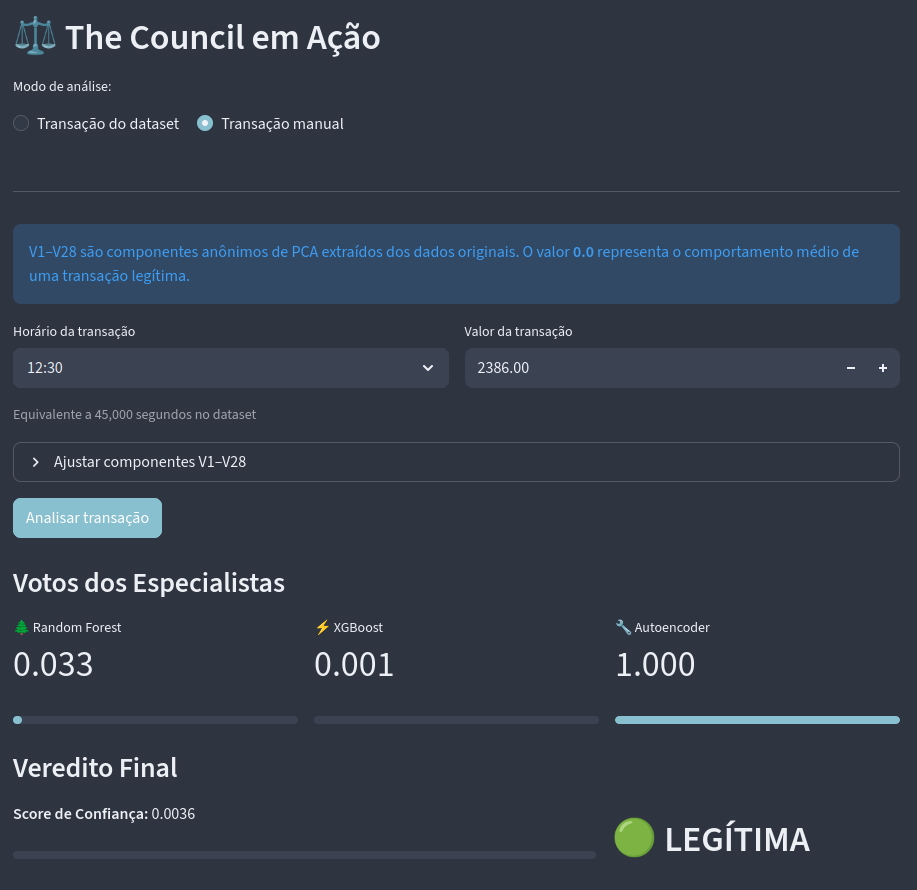
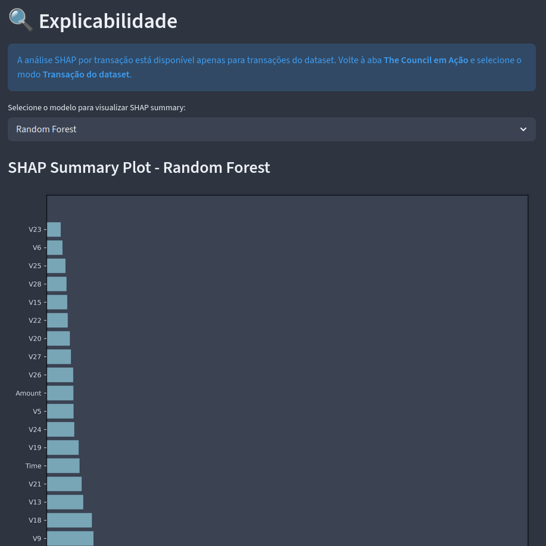

Conselho de modelos de detecção de fraude
Criei um meta-modelo de detecção de fraude em transações de cartão crédito que usa 3 especialistas

Este é um projeto de detecção de fraude de transação de cartão de crédito que utiliza um conselho de modelos de ML para chegar ao veredito. O conjunto de dados foi obtido a partir do famoso Credit Card Fraud Detection. A ideia inicial era utilizar Isolation Forest como um quarto especialista, mas por causa do recall de apenas 47%, mesmo após o finetune, decidi manter apenas 3 especialistas.
A principal nova tarefa que aprendi neste projeto foi a criação de um meta-modelo utilizando o score dos 3 modelos especialistas (Random Forest, XGBoost e Autoencoder), criando assim um detector de fraude mais poderoso. Para isso, esse meta-modelo foi treinado usando regressão logística (eu não poderia fazer algo mais pesado porque queria disponibilizar o projeto via Streamlit). Assim, o meta-modelo indica a probabilidade de fraude que vai de [0, 1].

No deploy decidi deixar disponível a verificação de fraude a partir de dois meios: a transação do dataset (que possui os dados do dataset original) e a transação manual (que permite ao usuário criar uma nova transação). Obviamente seria mais interessante que as features tivessem "labels", mas o dataset original não tem essas labels por questões éticas.

Por fim, na última aba coloquei a explicabilidade dos modelos usando SHAP (SHapley Additive exPlanations), que é um método usa para explicar a saída de modelos de ML calculando quais features são mais significativas. Acredito que também foi a primeira vez que trabalho com este método e agora estou pensando em criar um novo projeto que utilize features não anonimizadas para aprender mais sobre essa técnica.